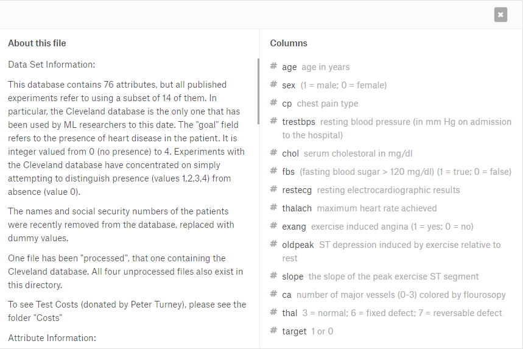

Program Decision Tree Python¶
Download Data Excel¶
Datasets yang digunakan adalah Hearth Disease dari Kaggle yang memiliki karakteristik data sebagai berikut :

- Jumlah data = 303
- Jumlah kolom = 14
- Jumlah class = 2
- Jumlah data class 0 = 138
- Jumlah data class 1 = 165
Program dan penjelasan¶
Import library¶
Langkah pertama adalah mengimport library yang dibutuhkan dan nantinya akan digunakan oleh program, adapun library yang digunakan yaitu :
- Numpy digunakan untuk operasi dalam matrik, biasanya digunakan dalam mengelola data dalam pandas.
- Pandas adalah sebuah dataframe yang memudahkan kita dalam membaca dan mengelola data. adapun data yang dapat dibaca oleh pandas adalah .txt .csv .tsv dan lainnya.
- Sklern merupakan library data scince, yaitu machine learning berbasis statistika, salah satunya adalah support vector machine dan regrasi linier
import numpy as np
import pandas as pd
from sklearn.tree import DecisionTreeClassifier
from sklearn.model_selection import train_test_split
from sklearn import metrics
from sklearn.tree import export_graphviz
from sklearn.externals.six import StringIO
from IPython.display import Image
import pydotplusMemasukkan file csv¶
Selanjutnya setelah menyiapkan library yang akan digunakan kita akan memasukkan data excel yang menjadi studi kasus kita, pastikan penamaan file benar dan file berada di folder yang sama dengan program.
data = pd.read_csv('heart.csv')data merupakan sebuah variable untuk menampung data dari heart.csv
Menampilkan data teratas dan informasi data¶
Tujuan dari menampilkan bagian awal data ini adalah untuk memastikan apakah file yang kita import telah sesuai dengan yang kita inginkan, dan sudah tidak salah. Kemudian untuk informasi data adalah untuk mengetahui kolom apasaja yang ada dan jumlah data yang ada.
data.head()
print(data.head())
data.info()Hasil outputnya sebagai berikut :
Memasukkan data dan split data¶
Dalam pemasukan data sebelumnya data dibagi menjadi dua yaitu x yang diunakan sebagai atribut dan y yang digunakan sebagai class. Dalam melakukan split disana terdapat test_size=0.3 adalah ukuran dari data test adalah 30% dan terdapat random_state disana adalah untuk random berapa kali data diacak jika angka yang dimasukkan berbeda maka data yang akan didapatkan juga berbeda.
X = data[['age','sex','cp','trestbps','chol','fbs','restecg','thalach',
'exang','oldpeak','slope','ca','thal']] #objek uji
y = data['target'] #objek kelas
X_train, X_test, y_train, y_test = train_test_split(X, y, test_size = 0.3, random_state=1)Operasi decision tree¶
Pembuatan operasi decision tree terdapat criterion entropy karena yang akan kita hitung adalah gain, jika tidak diisi maka akan menjadi perhitungan gini index. Kemudian terdapat max_depth ini adalah jumlah max dari akar dalam pohon yang akan dibuat nanti semakin banyak jumlahnya maka pohon akan semakin besar
clf = DecisionTreeClassifier(criterion="entropy", max_depth=3) #entropy dengan 4 cabang
clf = clf.fit(X_train,y_train)
y_pred = clf.predict(X_test)Membuat tampilan tree¶
feature_cols = ['age','sex','cp','trestbps','chol','fbs','restecg','thalach',
'exang','oldpeak','slope','ca','thal']
dot_data = StringIO()
export_graphviz(clf, out_file=dot_data, filled=True, rounded=True, special_characters=True,feature_names = feature_cols,class_names=['0','1'])
graph = pydotplus.graph_from_dot_data(dot_data.getvalue())
graph.write_png('kesehatan.png')
Image(graph.create_png())kode diatas adalah pembuatan tampilan untuk tree disana terdapat feature_cols berguna sebagai penguji. Selanjutnya adalah class Name pada export_graphviz adalah macam-macam kelas yang ada. graph = pydotplus berguna sebagai variable penyimpan gambar yang nantinya akan ditulis menjad gambar yang bernama kesehatan.png
Output :
Dengan adanya output seperti diatas berarti gambar suksess di save
Menampilkan akurasi¶
Selanjutnya adalah akurasi dari decision tree yang telah dibuat
print("Accuracy:",metrics.accuracy_score(y_test, y_pred)) Output :